Menerima pesanan
Kue Tart buatan tangan, Fresh dan Mantul.
Kue Tart Turen sudah berdiri dengan resep rumahan yang konsisten sejak 2019. Dengan rasa coklat yang melekat dan harga yang terjangkau — Tanpa pengawet, tanpa coloring berlebihan.
Menyiapkan Oven...
Kue Tart Turen sudah berdiri dengan resep rumahan yang konsisten sejak 2019. Dengan rasa coklat yang melekat dan harga yang terjangkau — Tanpa pengawet, tanpa coloring berlebihan.
Pilih ukuran diameter 18 cm untuk 6–8 porsi, atau 22 cm untuk acara kumpul keluarga. Semua bisa request ukiran nama dan tema tanpa biaya tambahan.

Tart dengan hiasan coklat leleh yang diguyur di atasnya, manis dan lembut.
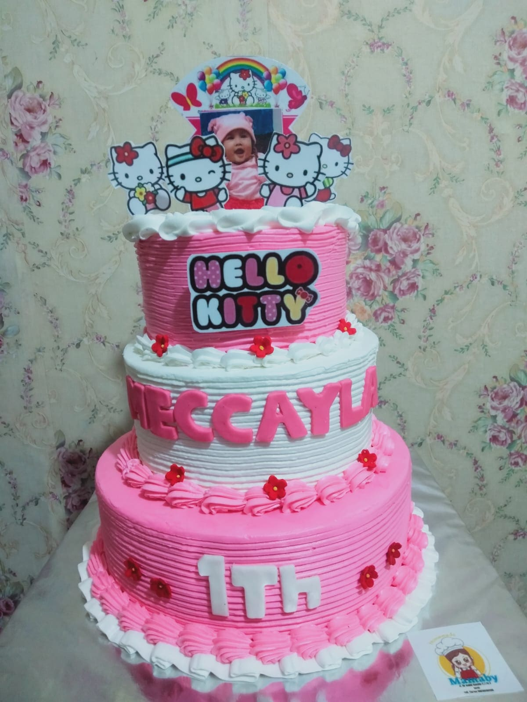
Kue tart tiga tingkat yang megah untuk acara spesial Anda.
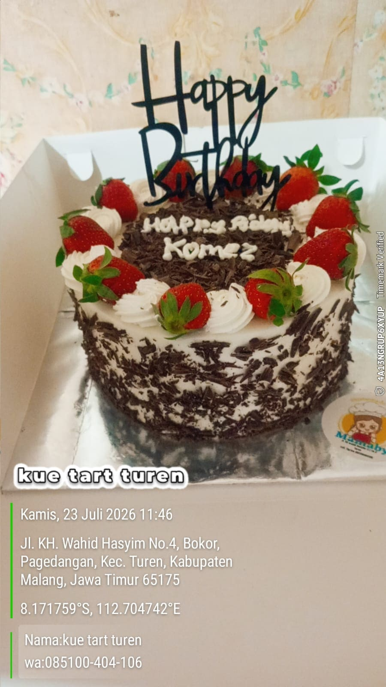
Spons vanila lembut dengan krim diplomat dan strawberry segar.
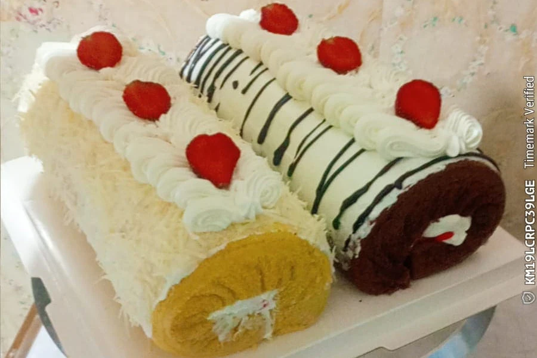
Roll cake lembut dengan lapisan krim yang pas di setiap gigitan.
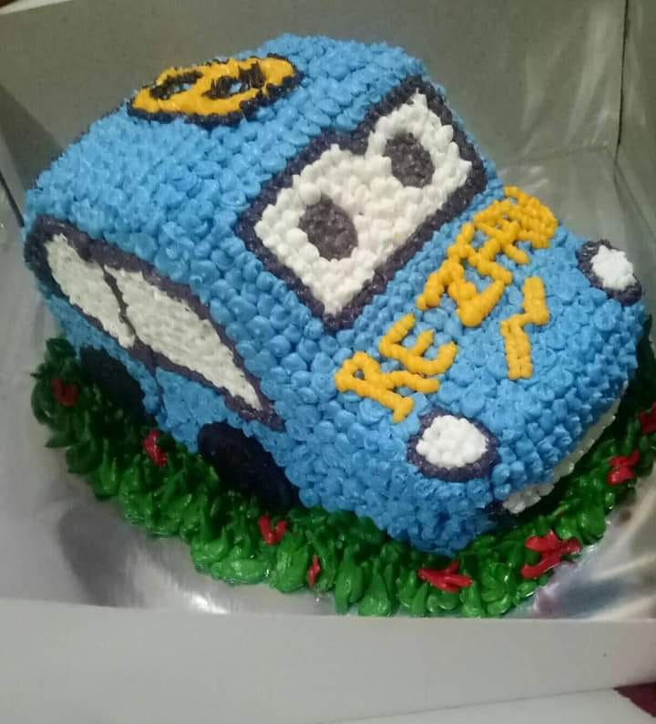
Tart bentuk 3D full tema karakter, detail dan menggemaskan.
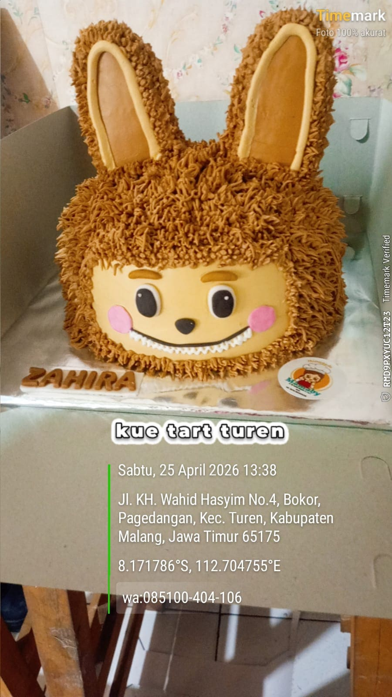
Tart berbentuk kepala karakter favorit, cocok untuk ulang tahun anak.
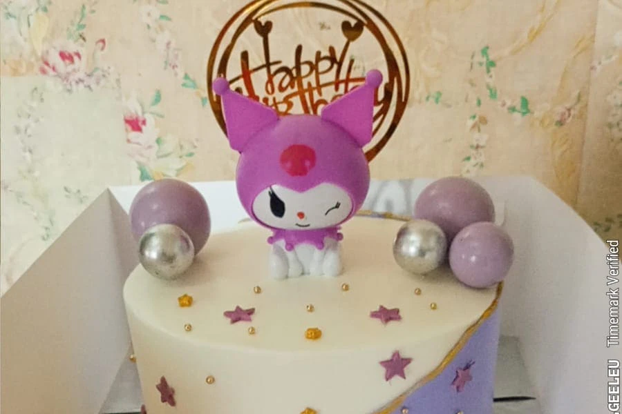
Tart datar dengan dekorasi karakter yang bisa disesuaikan permintaan.
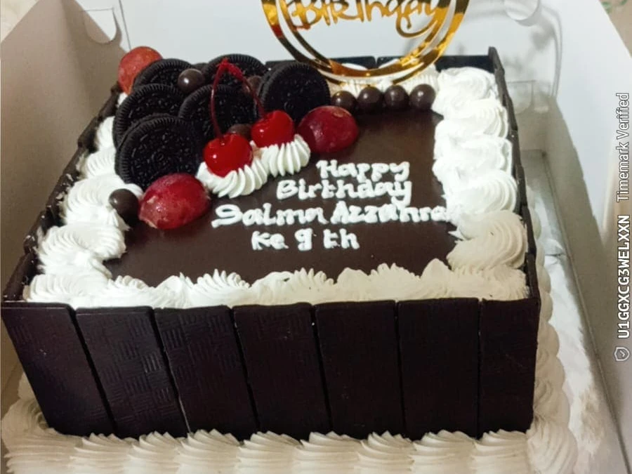
Tart persegi dengan pinggiran pagar coklat mengeras yang renyah.
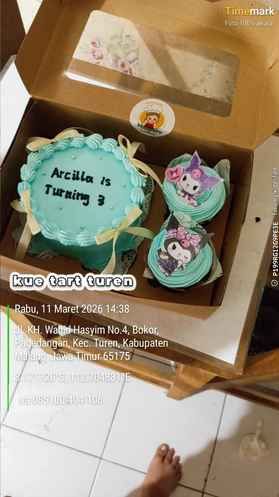
Paket tart bento kecil yang disertai dengan cupcake dalam satu kotak.
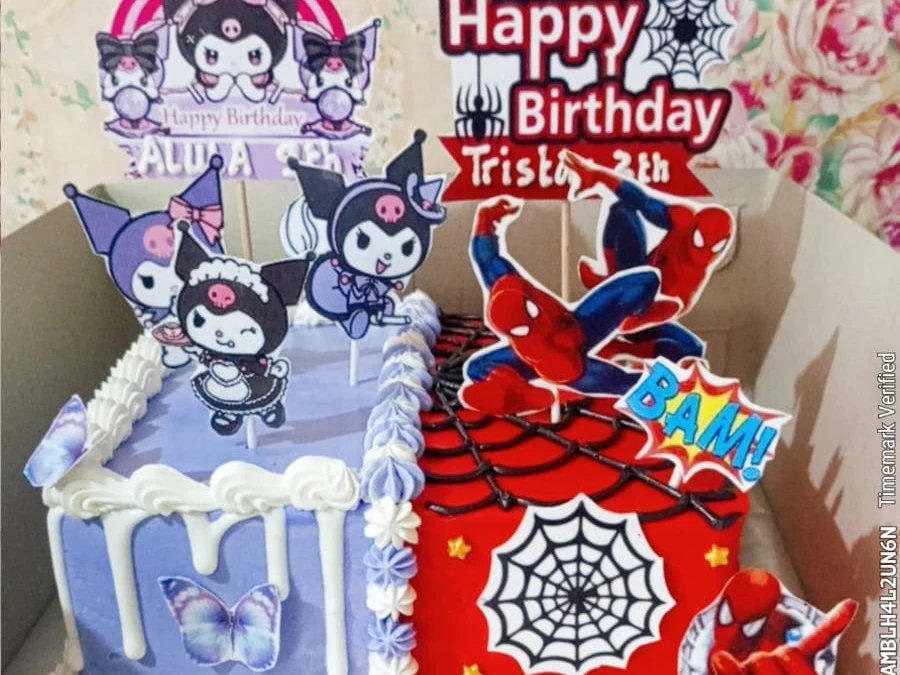
Satu kue tart dengan dua tema berbeda, solusi untuk berbagi selera.
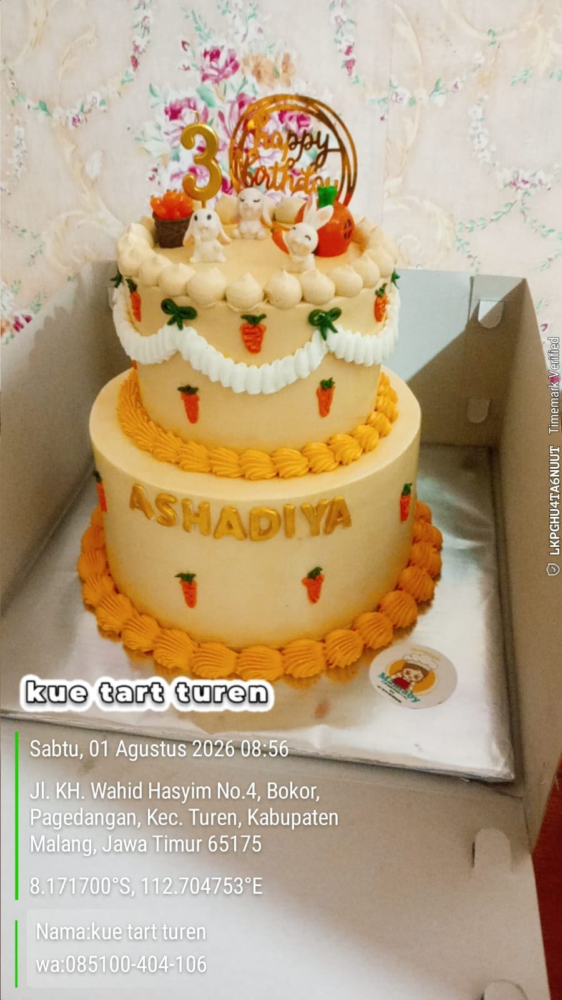
Kue tart dua tingkat yang elegan dengan perpaduan rasa seimbang.
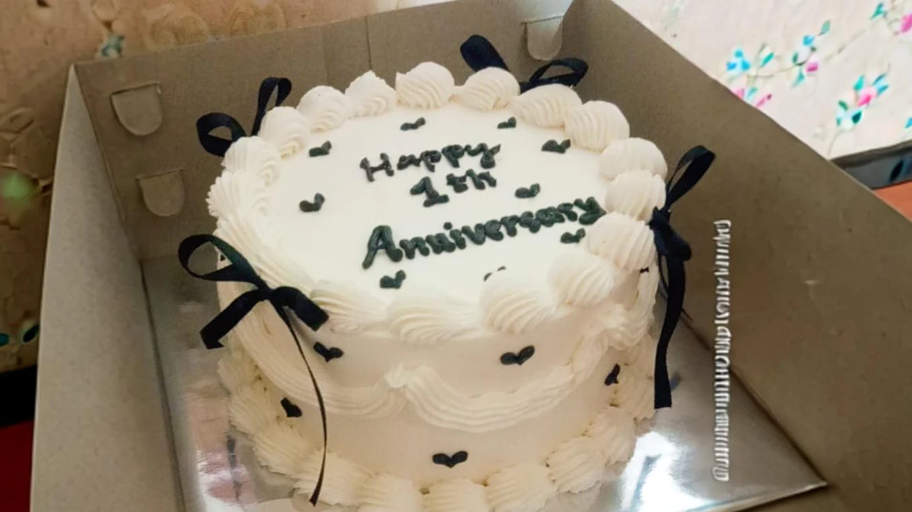
Tart cantik dengan dekorasi pita yang manis di bagian atasnya.
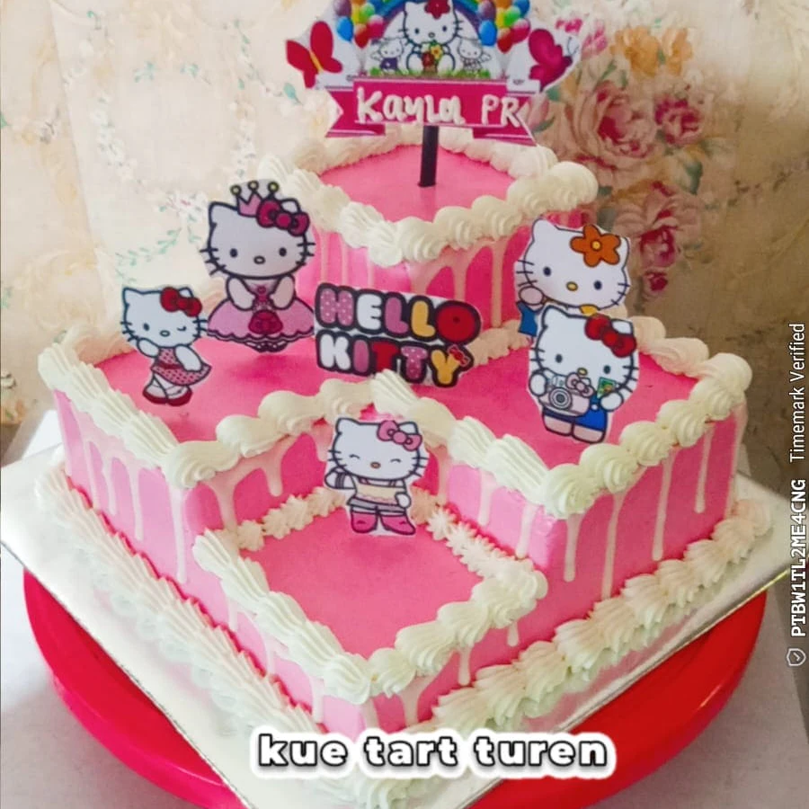
Tart persegi dengan potongan 1/4 bagian diletakkan di atas.
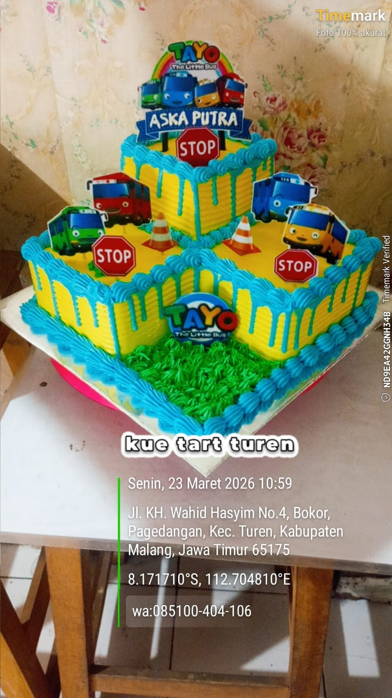
Tart sudut dengan tambahan potongan roti pada bagian yang kosong.
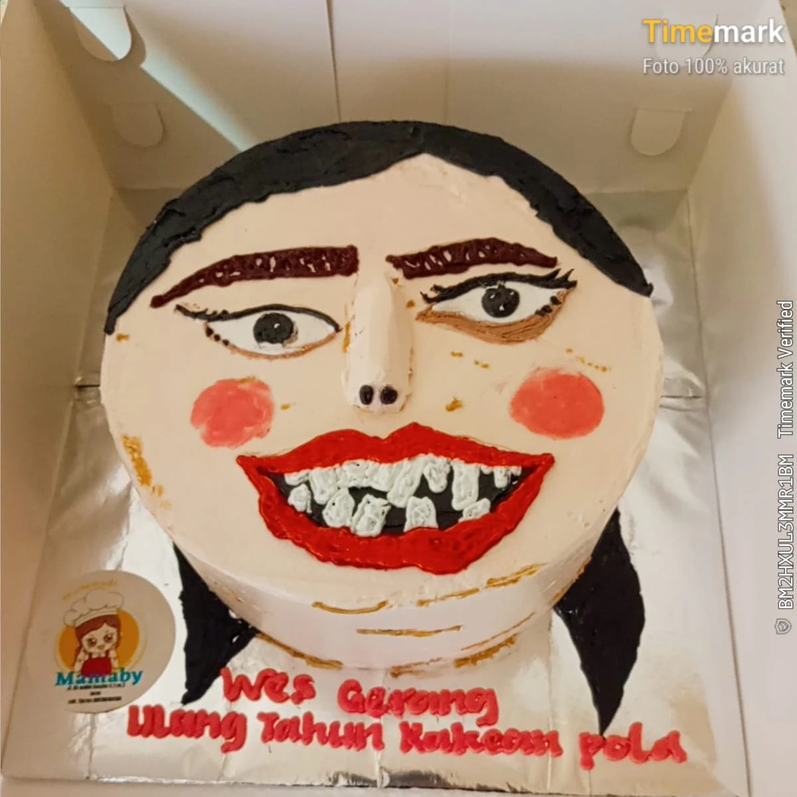
Kue tart dengan ekspresi wajah kocak, tren terkini.
Pesanan custom di atas 2 kg atau bentuk karakter silakan konsultasi 3 hari sebelumnya — kapasitas oven terbatas.
Konsultasi pesanan →Toko kami buka setiap hari. Dari jam 8 pagi hingga jam 10 malam.
Kel. Turen, Kec. Turen, Kabupaten Malang 65175 — Toko putih, Banner merah bertuliskan " kue Tart Turen".
Buka setiap hari — jadwal dapat berubah sewaktu-waktu.
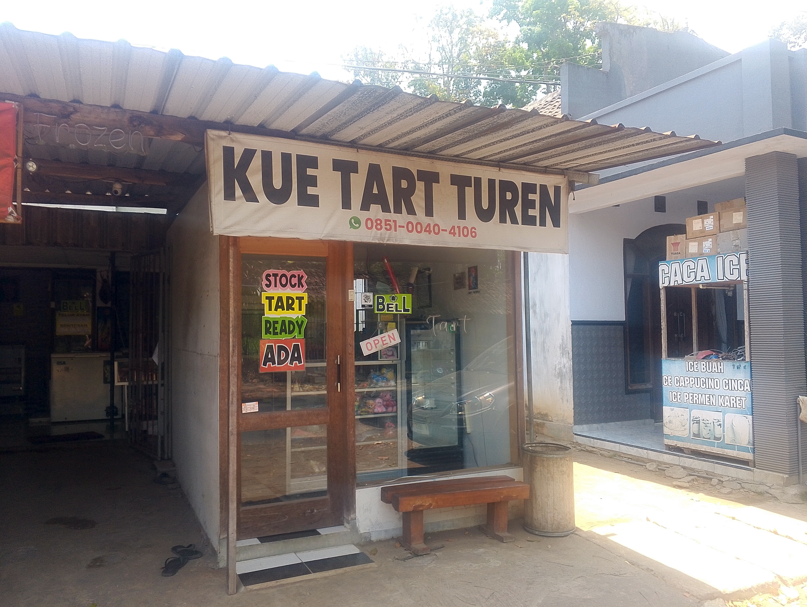
Mamaby (bu Debby) mulai menjual kue tart dari dapur rumah pada 2019 — pesanan pertamanya adalah satu buah Kue Tart untuk ulang tahun anak teman dekatnya.
selama 5+ tahun, Harga selalu ramah kantong. Kami masih memakai resep terbaik, telur ayam dari para peternak lokal, dan tanpa pengawet tambahan.
Kami juga menawarkan layanan kustom yang dapat disesuaikan dengan kebutuhan Anda. Dan kami selalu memberikan konsultasi terbaik secara gratis bagi para pelanggan.
Isi pilihan di samping atau hubungi langsung lewat kanal di bawah. Untuk pesanan besar dan bentuk custom, untuk memastikan pesanan siap tepat waktu hubungi minimal H-3 sebelum pengambilan.
Pilih varian di bawah, lalu klik tombol WhatsApp. Kami bantu proses sisanya.
Pesan via WhatsApp → Lihat Katalog di Tiktok